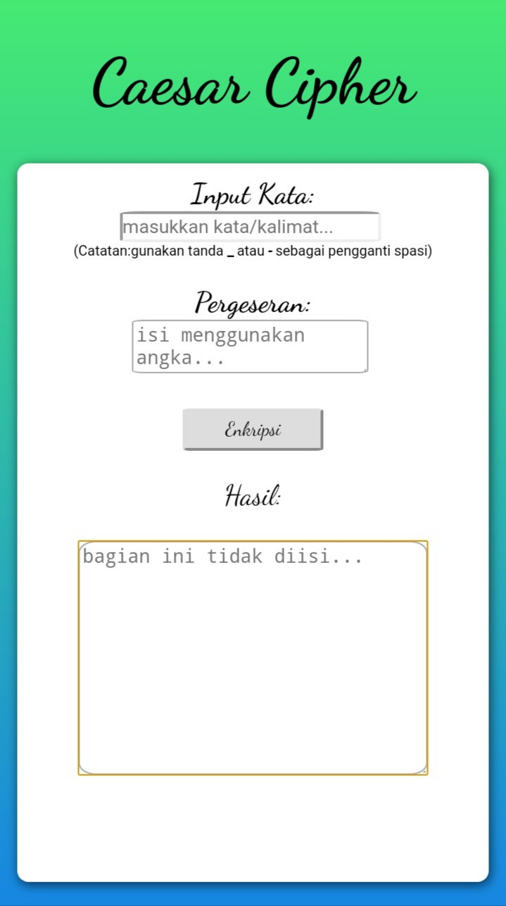

teknik enkripsi caesar merupakan teknik enkripsi paling sederhana. teknik ini cuma menggeser huruf-huruf penyusun sebuah kata/kalimat dengan angka pergeseran tertentu. misalnya dengan nilai pergeseran=2, huruf "a" digeser menjadi "c", huruf "b" digeser menjadi "d", dan seterusnya. Nah,teks yang akan dienkripsi ini disebut dengan "plain text" dan teks hasil enkripsi disebut dengan "encrypted text" . lalu bagaimana dengan huruf "z" ? jika huruf yang digeser mencapai huruf terakhir alfabet (yaitu z), maka perhitungannya dimulai kembali dari huruf "a". misalnya huruf "x" digeser sejauh 5, maka hasilnya menjadi "c". Contoh: jika plain text adalah "fikri" dengan nilai pergeseran 6, maka encrypted text nya adalah "loqxo". untuk lebih memahaminya, perhatikan gambar berikut:

untuk mempraktek-kan nya,saya telah membuat program untuk teknik enkripsi caesar menggunakan bahasa javascript. ini tampilan dari program tersebut

itu adalah contoh programnya. anda dapat langsung mencobanya disini. selamat mencoba